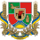

Области Украины
- Одесская область
- Днепропетровская область
- Черниговская область Бильше информации
- Харьковская область
- Житомирская область

- Полтавская область
- Херсонская область
- Киевская область
- Запорожская область
- Луганская область 
- Донецкая область
- Винницкая область
- АР Крым
- Кировоградская область
- Николаевская область
- Сумская область
- Львовская область
- Черкасская область
- Хмельницкая область
- Волынская область
- Ровненская область
- Ивано-Франковская область
- Тернопольская область
- Закарпатская область
- Черновицкая область
- Севастополь
- Киев
Все области Украины
 Больше информации
Больше информации
Не большая история Украины
Первые представители человеческого рода на территории современной Украины появились более миллиона лет назад, в эпоху нижнего палеолита. Это были питекантропы, пришедшие из Юго-Западной Азии. О данном факте свидетельствуют орудия труда и остатки жилищ из камня, обнаруженные на территориях нынешнего Приднестровья, Закарпатья, Житомирской и Донецкой областей. Позднее на их смену приходят неандертальцы, именно они плотно заселили южные земли Украины. Приблизительно в 35 тысячелетии до н. э. неандертальцы были вытеснены представителями Homo sapiens, которые впоследствии там обосновываются. Их основными занятиями были охота и собирательство, позднее они перешли к земледелию и скотоводству. В связи с массовым переселением народов в XV в. до н. э. территорию Украины начинают заселять кочевники. Первым и наиболее известным народом были ираноязычные киммерийцы. Спустя несколько сотен лет они были выдавлены скифами, которые по прибытии решают построить централизованное государство на тех землях. В дальнейшем оно будет называться Скифией. Одновременно с ними греки берутся за освоение черноморского побережья. К II столетию до н. э. контроль над украинскими землями перешёл к соседям скифов — сарматам. В начале новой эры за территории современной Украины велись ожесточённые бои. В III веке н. э. на них заселяются готы, там они берутся за строительство своего королевства. Через 100 лет их вытесняют на Запад гунны, более многочисленный и влиятельный народ, пришедший из Азии. Они, в свою очередь, ведут войну с римлянами. Последние наносят им несколько крупных поражений, в связи с этим империя гуннов распадается. Для Рима Украина была далёкой колонией, поэтому в дальнейшем земли переходят под контроль новоприбывших славянских племён. Там они активно создают новые культуры и языки, в результате чего разделяются на несколько самостоятельных народов — древляне, поляне, хорваты, северяне, волыняне, уличи, тиверцы и др. Вскоре они попадают под влияние Аварского, а затем Хазарского каганатов.
Киевская Русь
Отдельным этапом в истории Украины принято считать образование и развитие на её территории славянского государства Киевская Русь. Появилось оно благодаря деятельности новгородских князей из династии Рюриковичей. В особенности отличились Олег и Святослав Игоревич — первый освободил днепровские земли от дани Хазарского каганата, второй же полностью разгромил империю. Украинские земли перешли под полный контроль Древней Руси, а столица государства была перенесена в Киев. В 988 году киевский князь Владимир принимает христианство и провозглашает его основной религией. Столица становится митрополией, людей начинают обучать грамоте. Сама эпоха правления Владимира и его сына Ярослава войдёт в историю как «золотой век Киевской Руси» — именно при них Русь стала одним из наиболее развитых европейских государств, которое по уровню жизни могло конкурировать с Византией. В 1054 году умирающий князь Ярослав разделяет русские земли между своими сыновьями — Изяславом, Святославом, Всеволодом, Вячеславом и Игорем. Первому достаются Киевские земли, второму Черниговские, третьему — Переяславские. Двое других братьев погибают. Желание властвовать над бо́льшим числом земель породило междоусобные войны между наследниками. Параллельно с этим на территории Руси происходят набеги половцев. С целью защититься от них в 1097 году действующие князья собираются на съезде в городе Любече и договариваются о прекращении междоусобиц. Тем не менее в середине XII века Киевская Русь распадается на отдельные княжества, а половцы продолжают разворовывать земли. Вдобавок к этому в начале XIII века на княжества начинают нападать монголы. В результате нашествия Хана Батыя в 1240 году Киев берётся штурмом и сжигается дотла. К концу XIII века город приходит в полное запустение, а все остальные русские территории покоряются Золотой Орде.Первый Призидент Украина
Кравчук Леонид Макарович родился 10 января 1934 года в семье крестьянина.
Образование
Закончил Киевский национальный университет (1958), Академию общественных наук при ЦК КПСС (1970). Кандидат экономических наук, кандидатскую диссертацию защитил по теме «Сущность прибыли при социализме и её роль в колхозном производстве».Карьера
В 1958—1960 годы — преподаватель Черновицкого финансового техникума. В 1964—1965 гг. — помощник секретаря Черновицкого обкома Компартии Украины. В 1960—1967 годы — консультант-методист Дома политпросвещения, лектор, помощник секретаря, заведующий отделом агитации и пропаганды Черновицкого обкома КПУ. В 1970—1988 годах заведующий сектором, инспектор, помощник секретаря, первый заместитель заведующего отделом, заведующий отделом агитации и пропаганды ЦК КПУ. В 1989—1990 годах заведующий идеологическим отделом, секретарь ЦК КПУ. В 1989—1990 — кандидат в члены Политбюро. В 1990—1991 годы — член Политбюро ЦК КПУ. С 1990 года — второй секретарь ЦК КПУ. 4 марта 1990 года в первом туре первых альтернативных парламентских выборов в Украинской ССР избран депутатом Верховного совета Украинской ССР XII созыва (Верховной Рады Украины I созыва) от Ямпольского избирательного округа № 39 Винницкой области, набрал 68,69 % голосов среди 2 кандидатов, в парламенте стал членом Комиссии по вопросам культуры и духовного возрождения. С 1990 года был членом ЦК КПСС. В 1990—1991 — председатель Верховного Совета Украинской ССР. Вышел из КПСС после событий 19-21 августа 1991 года. 24 августа 1991 года под председательством Леонида Кравчука Верховный Совет республики принял постановление и Акт провозглашения независимости Украины. С 24 августа 1991 года по 5 декабря 1991 года — председатель Верховной рады Украины. Баллотировался на пост президента как беспартийный. 1 декабря 1991 года Леонид Кравчук был избран президентом Украины на первых прямых президентских выборах, набрав 61,6 % голосов. На досрочных президентских выборах 1994 года (на проведение которых он согласился под давлением массовых беспорядков лета 1993 года) во втором туре проиграл Леониду Кучме, набрав 45,1 % голосов.Все последуйщие Призиденты Украина
- Леонид Данилович Кучма 1994—2004
- Ющенко Віктор Андрійович 2005—2010

- Янукович Віктор Федорович 2010—2014
- Турчинов Олександр Валентинович в.о. Президента України (23.02.2014-06.06.2014)
- Порошенко Петро Олексійович 2014—2019
- Зеленський Володимир Олександрович 20.05.2019 - посей день